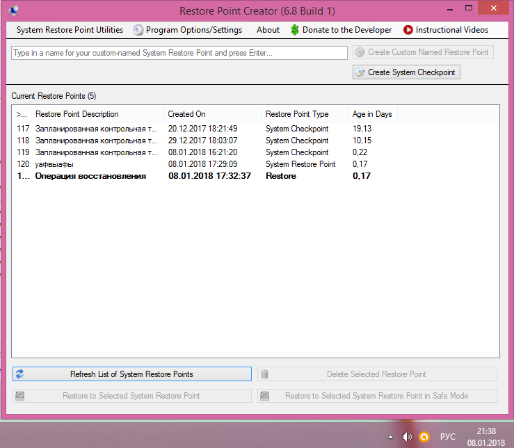
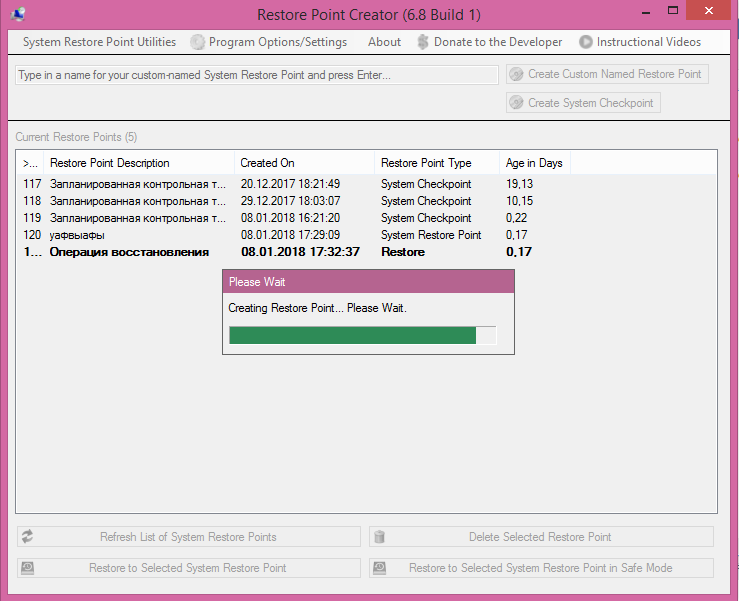
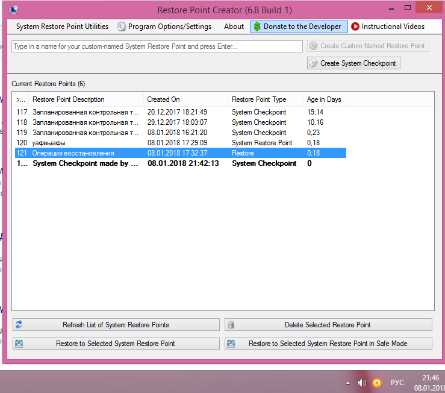
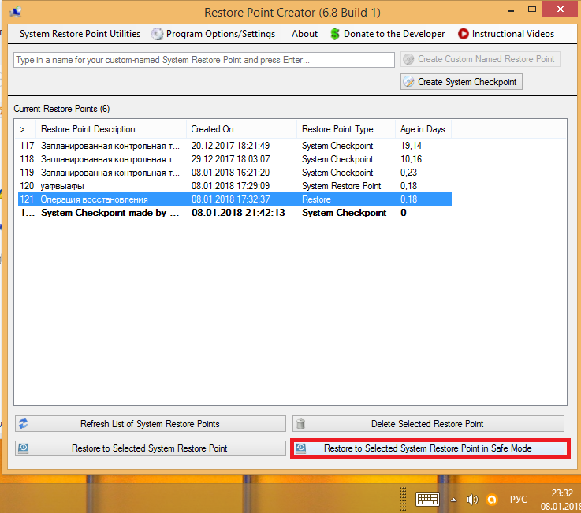
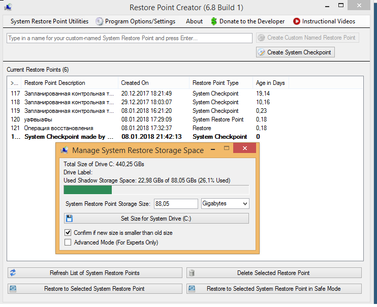
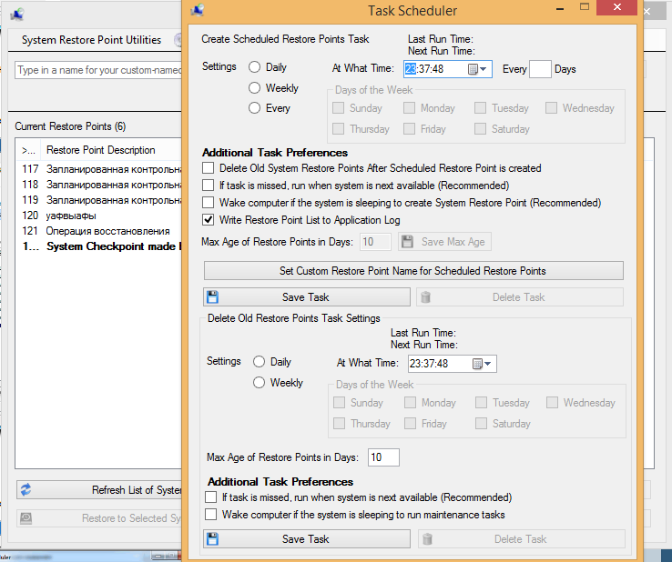

Restore Point Creator
Restore Point Creator - бесплатная программа, позволяющая очень просто создавать точки восстановления системы и восстанавливать систему до нужного состояния. Точка восстановления - это копия на диске реестра и всех критически важных файлов на какой-то момент времени. Пользоваться, однако, этой замечательной возможностью в системе Windows, скажем так, не очень-то удобно. Поэтому начинающие пользователи практически этим и не пользуются, да и опытным пользователям из-за неудобства пользования порой бывает просто лень этим заниматься. В принципе система Windows сама делает точки восстановления при установке, например, обновлений или программ, затрагивающих важные системные компоненты. Но частенько бывает нужно сделать самому точку восстановления системы или восстановить систему(сделать откат) до того состояния, когда она еще работала корректно. Для работы с точками восстановления будем использовать программу Restore Point Creator.
Практическое применение программы
 Программа проста до нельзя, одной кнопкой можно создать точку востановления со стандартным названием, но моно и создать свое название.

 Точка создана. Среди этих точек есть и созданая мной чере зсредства виндоус.
 Для восстановления системы в определенной точке(когда еще система работала корректно) Вы выделяете нужную точку восстановления и нажимаете кнопку восстановления:
Теперь, что бы начать востановление системы нужно нажать кнопку выделенную красным.
 Есть утилита для распределения дискового пространства под точки восстановления. Она вызывается из меню.
 Можно воспользоваться возможностями планировщика задач, чтобы автоматически создавать точки восстановления.